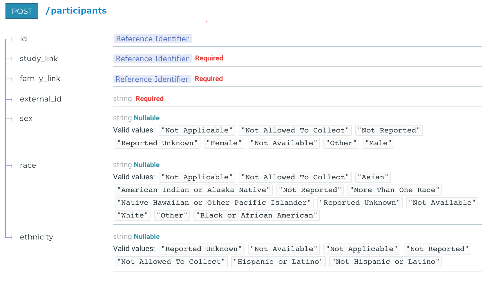

Making a Target Service Plugin¶
You have a bunch of extracted data that has been suitably merged together, and you have a server with a submission API, and now you want to put that data into that server. You need a target service plugin module that will convert from your tabular extracted data into the appropriate form for sending to your target service and that will negotiate the submission according to the demands of the service.
Existing Plugins For Reference¶
Here are two complete examples that work with the same input data for different target servers. Seeing what they look like in their entirety may be helpful in understanding what we’re trying to make:
- Plugin for loading data into the Kids First FHIR server:
- Plugin for loading data into the Kids First non-FHIR Dataservice:
The Parts of a Target Service Plugin¶
The target service plugin API has gone through multiple revisions. This
documentation only describes the latest version of the plugin API (currently
version 2). These are identified by defining a variable LOADER_VERSION = 2
in the plugin body. Plugins that don’t define this variable are assumed to use
version 1 of the plugin interface for backwards compatibility.
Target service plugins have two parts:
The plugin API version identifier
- As described above, after version 1, plugins must indicate which version of the plugin API they conform to by defining a variable
LOADER_VERSION = <version number>in the plugin body.Example:LOADER_VERSION = 2
The list of entity builder classes
These classes are responsible for converting lists of records into entity payloads, querying the target server for existing entities that have the same key components, and submitting completed payloads to the target service. Putting the builder classes into a list lets us indicate which order to load entities in.
The target service plugin structure details are explained in the
Load Stage Design section and in the header of
kf_lib_data_ingest/etl/configuration/target_api_config.py:
Configuration module specifying how a target model maps to the standard model.
Your target API configuration module must contain a list named `all_targets`
which contains, in the order that you want them to be loaded into the target
service, target entity builder classes (not instances) of the form:
[if LOADER_VERSION == 2]
class Foo:
class_name = 'foo'
target_id_concept = CONCEPT.FOO.TARGET_SERVICE_ID
@classmethod
def transform_records_list(cls, records_list):
'''
[IMPLEMENTATION OPTIONAL]
Transforms the given record list into the form needed for this
class's build_key and build_entity methods.
:param records_list: list of records coming from the Transform stage
:type records_list: list of dicts
:return: list of reformatted records needed by this class's build_key
and build_entity methods
:rtype: list of dicts
'''
return new_records_list
@classmethod
def get_key_components(cls, record, get_target_id_from_record):
'''
[IMPLEMENTATION REQUIRED]
Composes a minimal payload subset that uniquely identifies the given record.
:param record: CONCEPT values representing one record of extracted data
:type record: dict
:param get_target_id_from_record: a function that, given input arguments
(entity_class, record), will return the unique reference identifier
assigned by the target service for that entity
:type get_target_id_from_record: function
:return: body of record components that uniquely identify the entity
in the dataset
:rtype: object
:raises: Exception if record is not valid for entity
'''
return unique_key_components_from_record
@classmethod
def query_target_ids(cls, host, key_components):
'''
[IMPLEMENTATION OPTIONAL BUT STRONGLY RECOMMENDED]
Ask the server for identifiers matching the given unique key components.
:param host: host url
:type host: str
:param key_components: return value from get_key_components
:type key_components: object
:return: all identifiers on the server that match the key components
:rtype: list
'''
return list_of_target_ids
@classmethod
def build_entity(cls, record, get_target_id_from_record):
'''
[IMPLEMENTATION REQUIRED]
Constructs a payload body that can be submitted to the target service
for the given record.
:param record: CONCEPT values representing one record of extracted data
:type record: dict
:param get_target_id_from_record: a function that, given input arguments
(entity_class, record), will return the unique reference identifier
assigned by the target service for that entity
:type get_target_id_from_record: function
:return: an entity body ready to send to the target service
'''
return payload_body_composed_from_record
@classmethod
def submit(cls, host, body):
'''
[IMPLEMENTATION REQUIRED]
Negotiate submitting completed entity data to the target service and
return the identifier assigned by the server.
:param host: host url
:type host: str
:param body: entity body constructed by entity_class.build_entity
:return: The target entity reference ID that the service says was
created or updated
:rtype: str
:raise: RequestException on error
'''
return unique_identifier_from_the_server_of_the_constructed_entity
[if LOADER_VERSION == 1] [DEPRECATED]
class Foo:
class_name = 'foo'
target_id_concept = CONCEPT.FOO.TARGET_SERVICE_ID
@staticmethod
def transform_records_list(records_list):
'''
[IMPLEMENTATION OPTIONAL]
Transforms the given record list into the form needed for this
class's build_key and build_entity methods.
Defining this method is optional for your entity builder classes.
:param records_list: list of records coming from the Transform stage
:type records_list: list of dicts
:return: list of reformatted records needed by this class's build_key
and build_entity methods
:rtype: list of dicts
'''
return new_records_list
@staticmethod
def build_key(record):
'''
[IMPLEMENTATION REQUIRED]
Composes a string that can uniquely identify the given record.
:param record: CONCEPT values representing one record of extracted data
:type record: dict
:return: string of record components that uniquely identify the entity
in the dataset
:rtype: str
:raises: Exception if record is not valid for entity
'''
return unique_key_composed_from_record
@staticmethod
def build_entity(record, key, get_target_id_from_record):
'''
[IMPLEMENTATION REQUIRED]
Constructs a payload body that can be submitted to the target service
for the given record.
:param record: CONCEPT values representing one record of extracted data
:type record: dict
:param key: the value returned by the build_key method
:type key: str
:param get_target_id_from_record: a function that, given input arguments
(entity_class, record), will return the unique reference identifier
assigned by the target service for that entity
:type get_target_id_from_record: function
:return: an entity body ready to send to the target service
'''
return payload_body_composed_from_record
The all_targets list will look like this:
all_targets = [
Foo,
...
]
Your entity classes can do anything else you want as long as they meet these
requirements.
LOADER_VERSION 1 [DEPRECATED] API modules must also contain a `submit` function
with the following signature that sends a ready entity payload to the target
service and returns the unique identifier of the target entity that was created
or updated on the target server:
def submit(host, entity_class, body):
'''
[IMPLEMENTATION REQUIRED]
Negotiate submitting the data for an entity to the target service.
:param host: host url
:type host: str
:param entity_class: which entity class is being sent
:type entity_class: class
:param body: entity body constructed by entity_class.build_entity
:return: The target entity reference ID that the service says was
created or updated
:rtype: str
:raise: RequestException on error
'''
...
Example¶
Say that you have a hypothetical service with the following specification for submitting Participant data:
Example Entity Builder Class¶
This class tells the Load stage how to build our hypothetical participants from extracted data:
from kf_lib_data_ingest.common.concept_schema import CONCEPT
import requests
class Participant:
class_name = "participant"
target_id_concept = CONCEPT.PARTICIPANT.TARGET_SERVICE_ID
@classmethod
def get_key_components(cls, record, get_target_id_from_record):
assert record[CONCEPT.STUDY.TARGET_SERVICE_ID] is not None
assert record[CONCEPT.PARTICIPANT.ID] is not None
return {
"study_link": record[CONCEPT.STUDY.TARGET_SERVICE_ID],
"external_id": record[CONCEPT.PARTICIPANT.ID],
}
@classmethod
def query_target_ids(cls, host, key_components):
response = requests.get(url=f"{host}/participants", json=key_components)
if response.status_code == 200:
return [r["id"] for r in response.json()]
@classmethod
def build_entity(cls, record, get_target_id_from_record):
secondary_components = {
"id": get_target_id_from_record(cls, record),
"family_link": get_target_id_from_record(Family, record),
"sex": record.get(CONCEPT.PARTICIPANT.SEX),
"race": record.get(CONCEPT.PARTICIPANT.RACE)
"ethnicity": record.get(CONCEPT.PARTICIPANT.ETHNICITY)
}
return {
**cls.get_key_components(record, get_target_id_from_record),
**secondary_components,
}
@classmethod
def submit(cls, host, body):
response = requests.post(url=f"{host}/participants", json=body)
if response.status_code in {200, 201}:
return response.json()["id"]
else:
raise requests.RequestException(
f"Sent to {response.url}:\n{body}\nGot:\n{response.text}"
)
Example Target Service Plugin¶
In this example there’s only one entry in the all_targets list because
we only defined a builder for participants, but you will probably have many.
from example_participant_builder import Participant
LOADER_VERSION = 2
all_targets = [
Participant
]